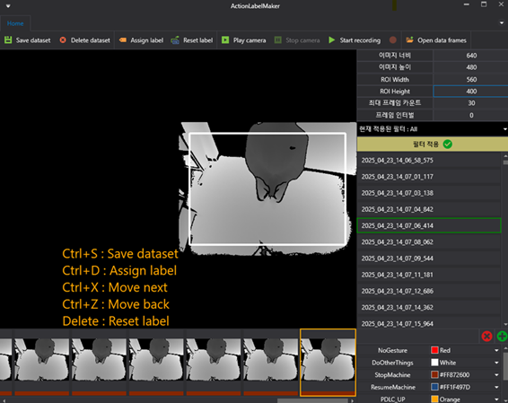

Gesture Recognition System for Laser Machine Safety Control
ToF detection · 6 gesture classes · Time-series classification · Real-time safety
Overview
Two-stage safety system for laser machine control: human detection stage followed by 3D time-series gesture classification. Recognizes 6 different gestures using Time-of-Flight (ToF) sensor data with low latency for real-time safety control.
Problem
- Safety-critical application requiring near-zero latency.
- Need to distinguish 6 different gesture classes reliably.
- 3D ToF data requires specialized time-series processing.
- False positives could cause production disruption.
Solution
- Two-stage pipeline: human detection → gesture classification.
- Time-series classifier designed for 6 gesture classes from ToF data.
- Latency reduction through optimized inference pipeline.
- Robust validation under various operational conditions.
My Role
- Built human detection stage and gesture pipeline with ToF data.
- Designed time-series classifier for 6 gesture classes.
- Optimized latency reduction for real-time safety control.
- Validated system under production environment conditions.
Implementation
Language: Python
Libraries:
PyTorch
OpenCV
Sensor: Time-of-Flight (ToF) camera
Gestures: 6 classes for laser machine control
Results Gallery
Real-time gesture recognition system demonstration.

Gesture recognition Inference visualization
End Result
- Real-time safety gesture recognition system for laser machines.
- Low-latency classification suitable for safety-critical applications.
- Robust performance across 6 gesture classes with ToF data.